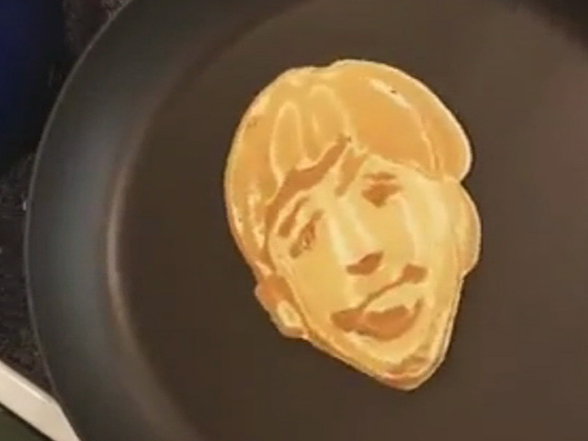

Today's News
|| Featured Topics ||
Artist draws The Beatles With pancake batter: Makes his own Good Day Sunshine
by Anne T. Jemima
You can eat these eight days a week--or after a hard day's night. Artist Nathan Shields sketched the Beatles with pancake batter capturing the process in one rockin' video that recently went viral on YouTube. While Shields posted the video a several months ago, the viral attention continually renews like an influenza virus that keeps mutating. Has his choice of medium impacting anything outside of his art? "I should have known better," explains Shields. "I've ate so many of my trial sketches and carry that weight." But Shields recently swore off consuming his drafts for a serious diet saying, "that was yesterday." "I'm a loser, he concluded in the end. You probably walk through the streets while texting and not paying attention to your surroundings only to whomever is chatting on your screen. This causes collisions with other pedestrians. You could, unknowingly, even walk right into your text mate. If pedestrian lanes are successful, Wander plans next year to propose a similar solution for texting drivers.
Toe wrestling competitors put best foot forward
by Susan Sochs

Draped in a Union Jack flag, Alan "Big Piggy" Nash retained his title last weekend as World Toe Wrestling Champion. The Derbyshire village of Boughringtown in northern England hosted the World Championship of Toe Wrestling last weekend in a competition that drew spectators of all ages for some serious toe-tussling. Toe wrestling traces its roots to 1976 when Staffordshire pub landlord George Burgess sought to find a new sport for Brits to dominate, according to the Bentley Brook Inn where the championship took place. "I just love the fact that this is the one sport that England always win at, we get hammered at everything else," Nash said. "My technique ... is to hurt the first person that comes into the ring with me: hurt them bad and terrify everyone else." There are two participants in each bout. With their feet on a small square ring on the floor, the competitors begin by locking their big toes together, before battling arm-wrestling style to drive their opponent s foot to the ground. Toe inspections are a must and mixed sex matches are, of course, not allowed. There have been some dirty toed tactics, flicking off is one of them, organiser Edward Allington said. "If you know you re going to lose, if you pull your toe away then it s difficult for the referee to decide if it s accidental or deliberate."
Exam season: Now with piglets!
by Ima Hogg

This spring, Nottingham Trent University is looking to make exam season a little less painful and a lot more adorable for its students. Members of NTU s student union have decided to create a piglet room for their fellow students to use to de-stress. Students are allowed to spend a few minutes interacting with the tiny swine, as well as baby goats, chicks, and even a donkey foal. This ingenious idea is actually a fundraiser for a local guide dog organization. After the success of a similar puppy event last year, they decided to branch out. It s been busy the entire two days, student union president Igor Beaver explained. "There s just a really good buzz around the campus." That buzz is spreading to the Internet as well, with the hashtag #PigletRoom taking over Twitter and Instagram. Other universities around the United Kingdom have tried this tactic, too. The most popular option seems to be puppies, although Bath Spa University opted for Shetland ponies. Universities in the United States have followed suit, using everything from chickens to therapy cats in order to help students stay calm.
Mystery of holes in Swiss cheese cracked after a century
by Borden Drousy

Eureka! After about a century of research, Swiss scientists have finally cracked the mystery of the holes in Swiss cheese. Despite what you may have been told as a child, they are not caused by mice nibbling away inside cheese wheels. Experts from Agroscope, a Swiss centre for agricultural research, say the phenomenon -- which marks famous Swiss cheeses such as Emmental and Appenzell -- is caused by tiny bits of hay present in the milk and not bacteria as previously thought. They found that the mystery holes in such cheeses became smaller or disappeared when milk used for cheese-making was extracted using modern methods. "It s the disappearance of the traditional bucket" used during milking that caused the difference, said Agroscope spokesman I.M. Shirley Wright, adding that bits of hay fell into it and then eventually cause the holes.